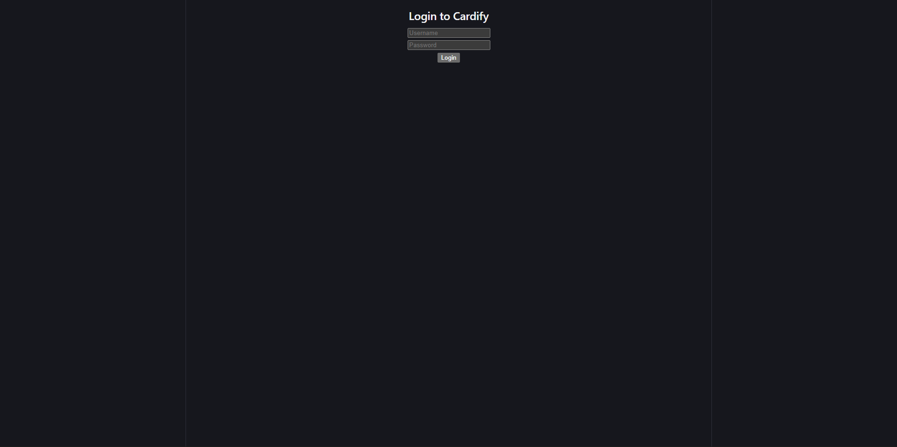

A Kanban board application built with python backend using Django and Rest APIs
with a frontend built with React
Cardify is a Kanban board application that allows users to create and manage tasks in a visual way. The backend is built using Python and Django, with REST APIs to handle data communication between the frontend and backend. The frontend is built using React, providing a responsive and interactive user interface.
Users can create boards, add lists to those boards, and then add cards to the lists. Each card can have details such as title, description, due date, and labels. Users can also move cards between lists to reflect their progress.
The application also includes user authentication, allowing users to sign up, log in, and manage their own boards and tasks.